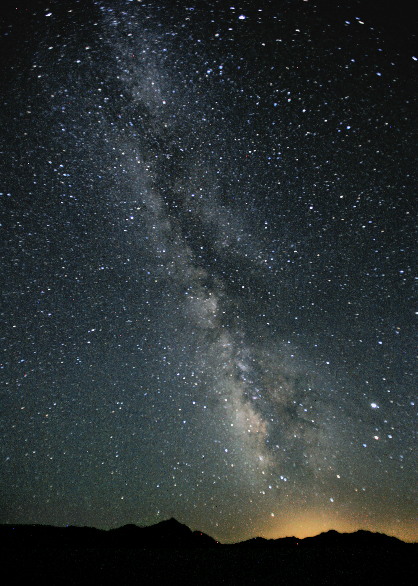
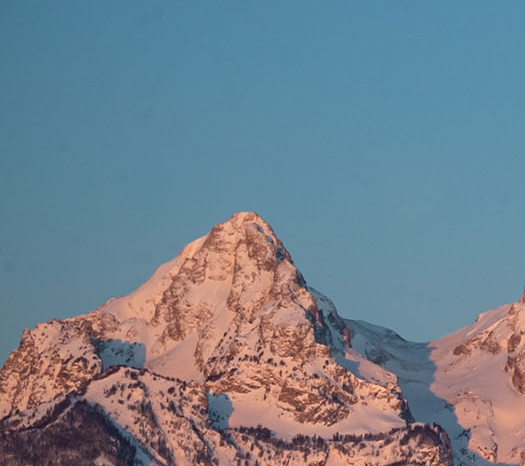

Layered Shadows
Multiple shadow layers create realistic depth that changes on hover.
Shadows, gradients, and filters working together.
Multiple shadow layers create realistic depth that changes on hover.
A subtle gradient on the card background adds dimension without distracting from content.
A grayscale or sepia filter on the image that lifts on hover draws attention to active cards.
This panel uses backdrop-filter to blur and saturate the image behind it. The text stays sharp while the background softens into a frosted surface.
These icons use drop-shadow() instead of box-shadow so the shadow follows the actual shape of each image rather than its bounding box.

The image to the left of this paragraph uses clip-path(), while the four images below (And this section) make use of mask-image() and related features.
